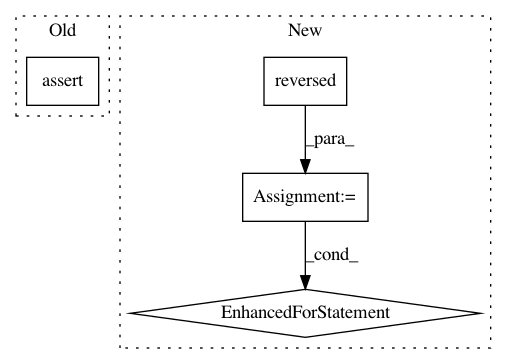

b76a0be97a8c67df494d5767e75d211184cb2787,TTS/vocoder/models/wavegrad.py,Wavegrad,__init__,#Wavegrad#Any#Any#Any#Any#Any#Any#Any#Any#,10
Before Change
super().__init__()
assert len(upsample_factors) == len(upsample_dilations)
assert len(upsample_factors) == len(ublock_out_channels)
// setup up-down sampling parameters
self.hop_length = np.prod(upsample_factors)
self.upsample_factors = upsample_factors
After Change
// film
self.film = nn.ModuleList([])
ic = y_conv_channels
for oc in reversed(ublock_out_channels):
self.film.append(FiLM(ic, oc))
ic = oc
// ublocks
self.ublocks = nn.ModuleList([])
ic = x_conv_channels
for oc, uf, ud in zip(ublock_out_channels, upsample_factors, upsample_dilations):
self.ublocks.append(UBlock(ic, oc, uf, ud))
In pattern: SUPERPATTERN
Frequency: 3
Non-data size: 4
Instances
Project Name: mozilla/TTS
Commit Name: b76a0be97a8c67df494d5767e75d211184cb2787
Time: 2020-10-29
Author: erogol@hotmail.com
File Name: TTS/vocoder/models/wavegrad.py
Class Name: Wavegrad
Method Name: __init__
Project Name: biocore/scikit-bio
Commit Name: 791c934318c81fb768275a9abb2f53e919cb9813
Time: 2015-03-26
Author: jai.rideout@gmail.com
File Name: skbio/sequence/tests/test_sequence.py
Class Name: SequenceTests
Method Name: test_reversed
Project Name: dit/dit
Commit Name: 82fde8c147af15b304d7e3b7b1aba1da3bcf988f
Time: 2013-10-23
Author: ryangregoryjames@gmail.com
File Name: dit/tests/test_distribution.py
Class Name:
Method Name: test_dist_iter2